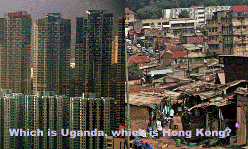

< < < Back
The Fantastical Myth Of Gender And Race Being “Social Constructs” – Return Of Kings
When politically correct leftists, well-versed in cultural Marxist argumentation tactics, want to discredit a certain concept, they might say it’s “only a social construct”. The argument follows that it doesn’t really exist, they’re right, you’re wrong, QED, case closed. Let’s examine this rhetorical trick.
“Gender is only a social construct”
Believing something doesn’t make it so.
Gender (excluding grammatical usages) means the behavioral, cultural, or psychological traits typically associated with one sex. As the argument goes, biological sex isn’t the same thing as gender. Most men act masculine and most women act feminine. Still, some act the opposite. All right then, so some men are effeminate and some women are butch.
As for the “socially constructed” part, one example is clothing. Skirts are typically women’s attire and pants are typically men’s attire. Even so, women commonly wear jeans too, though it was a bit edgy in the 1960s. Further, the men’s national costume in Scotland (likewise ancient Egypt) features a wraparound design roughly similar to a skirt. Pink and blue for girls and boys is an arbitrarily decided custom. Very well, so fashion is an agreed-upon cultural feature.
However, none of that disproves innate differences. When I was three, I observed that boys and girls act differently and have different interests. (It was ten more years before I decided girls aren’t boring.) Advanced species have sexual dimorphism; humans are no exception. Leftists assert that boys and girls act the way they do because they’ve been taught this. Further, it’s an injustice (the logic escapes me) and we must program children to be the same. However, even babies—uncorrupted by society—express different interests. So much for Rousseau’s “blank slate” argument!
Typically masculine and feminine traits correlate to men and women. Granted, individuals differ in how much they match this, and some act the opposite. Still, on average, the correlation is true. (If only people who don’t understand what an average is would just shut up!) Masculinity and femininity are real, and this isn’t bad; these differences complement each other in a healthy society. Why not just let it be?
After muddying the waters, the big trick is making “gender” appear more real than biological sex. Today, believing male and female are distinct categories is “intolerance”; now there are literally dozens of bewildering descriptors. (The “genderfluid” claim to change gender as the mood strikes them; even leftists often find that unfathomable.) If a man puts on a dress and calls himself a woman, now everyone must go along with that, and even let him use the women’s bathroom and presumably the women’s locker room too. If anyone objects, hordes of people infected with politically correct memes will scream bloody murder. He still has male anatomy, though he might disguise himself with extensive cosmetic surgery, and all his cells include XY chromosomes, but supposedly all that matters is that he “feels like a woman”.
However, feelings don’t create reality, and they prove nothing. Believing something doesn’t make it so. If a five year old believes he’s Superman, he still can’t fly. If he wears his cape to school, perhaps someone will helpfully teach him the difference between fantasy and reality.
“Race is only a social construct”

But the greater question is: why?
Nobody has a problem acknowledging differences in breeds of dogs. Noticing differences between genetically-related human populations is taboo. Leftists generally don’t have a problem with the theory of evolution, but they seem to believe that it doesn’t apply to the various branches of humankind. They go berserk if this taboo is challenged. Not only is a big cornerstone of their ideology on the line, their credibility is too. If it turns out that their social experiments and aid programs were based on some flawed assumptions, then this means that they recklessly and harmfully tampered with society and wasted an enormous sum of taxpayer funds over decades.
Those muddying the waters with the “social construct” argument will point out that there isn’t universal agreement on where to draw the lines. For instance, Arabs are Caucasoid, but some consider them a different racial category than Europeans. (Clarity can be achieved by grouping families of nations as an interim classification between races and single nations.) Be that as it may, other areas—for instance, India and Latin America—are harder to classify because they’re largely mixed. Still, purple doesn’t deny the existence of red and blue.
Once you’ve got that out of the way, next they’ll deny that these categories are meaningful. Societies built by genetically-related groups tend to be similar, increasingly different the further the genetic difference. Does culture really appear from nowhere? Leftists undergo great mental gymnastics denying other explanations. Part of this national character is how well-run the countries are. Some have attempted to say that various regions prospered, while others did not, simply at random. Is civilization an accident then? The more popular tactic, of course, is to say that wealthier regions got that way because they exploited other people. Usually, these arguments leave out many inconvenient facts.
A country’s prosperity is increased by abundant natural resources and diminished by adverse events in recent history. Still, its population plays a formative role, and eventually countries find their own level. Sub-Saharan Africa is a mess. The pat answer is the lingering aftereffects of colonialism. (Oddly, leftists never bolster historical arguments with destruction caused by Communist “liberation movements”, or kleptocratic misrule. Neither do they mention colonialism bringing infrastructure such as rail, highways, electrification, and modern medicine.) Still, let’s examine the colonialism argument.
Ethiopia was colonized only by Italy, from 1936-1941. Afterward, Emperor Haile Selassie (Ras Tafari), recently restored to power, finally abolished slavery after dithering with the peculiar institution since the 1920s. This was slightly redundant, because one of the first things the Italians did in Ethiopia was free the slaves. (Strangely, Mussolini isn’t revered like Abraham Lincoln.) Per the IMF’s 2015 report, Ethiopia’s nominal per capita income is $736. Did five years of colonization decades ago cause that?
Australia was a British colony from 1770-1942. Their lingering effect of colonialism is a per capita income of $51,642. I can hear it already—Australia doesn’t count because the British ran the Aborigines off their land. All right then, we’ll look at Hong Kong, still quite Asian. The British ruled from 1842-1997 (excepting Japanese occupation from 1941-1945). Hong Kong’s per capita income is $42,437. Perhaps we’ll need another explanation why Uganda, Zimbabwe, and Nigeria don’t resemble former colonies like Hong Kong, Korea (a former Japanese colony), and Singapore.
A social construct that can kill you
Agreed-upon concepts can be very important. Ignore them at your peril.
Diabetes is a social construct, because a particular society—the medical profession—decided that an above-normal fasting glucose level indicates diabetes. (That’s right, they label people like them as sick! How dare they decide who is normal, and label some people as abnormal?) A fasting result of 80-110 mg/dl is normal. A result of 200 or above means you are diabetic. (Below 70 is a different problem.) These problems are in increasing severity the further away from normality, from barely noticeable symptoms to death.
Some sources give the normal range as 80-100, with full-blown diabetes diagnosed beginning at 127. Therefore, there’s some disagreement on where to draw the line. (I’m not a doctor, see one if you need one.) So you’re okay at 110 according to some standards; by others you’re hyperglycemic and at risk of it worsening. This disagreement doesn’t invalidate the concept of diabetes. If you decide that it’s not real because it’s a social construct with a varying definition and fuzzy boundaries, and because of this you don’t get it treated, eventually some very bad things will happen to you.
No values here, please
All beliefs are equal, but some beliefs are more equal than others.
Finally, a variant of the social construct dodge is used to justify double standards. It generally goes something like this:
“I hate living in Utah. These Mormons so backward! They actually expect women to become wives and mothers. Would you believe it? They just want to keep us barefoot and pregnant!”
“So what do you think about Islam then? Women aren’t allowed to drive, or leave the house unsupervised by a male family member. They’re expected to wear burqas. According to their religion, their husbands can beat them. In court, their testimony is only half as valid as a man’s. The penalty for adultery is death.”
“Um, well, that’s different. That’s their culture.”
“Doesn’t it give you more appreciation for living here?”
“Absolutely not! Everything in Utah is so repressive!”
“Don’t you think reasonable expectations can serve a positive social purpose, making life better for all?”
“You’re one of them, aren’t you?”
It never occurs to leftists that the society they live in can set its own standards too. Those who advocate neutrality are usually saying “shut up and do things our way.” As Pat Buchanan wrote (though in a narrower context):
Someone’s values are going to prevail. Why not ours? Whose country is it, anyway?
Social standards can be debated in the free marketplace of ideas, but rejecting all standards whatsoever is usually a call for unlimited personal autonomy without responsibility.
Turnabout is fair play
Want to have some fun with leftists? Just say something like the following:
Well, you see, ‘privilege’ is only a social construct; therefore your argument is invalid.
Simply fill in whatever buzzword they just threw at you, such as ‘patriarchy’, ‘microaggression‘, ‘intersectionality’, or some anti-concept ending in ‘-ism’ or ‘-phobia’. If they can’t clearly explain themselves from first principles, that’ll cause their SJW software to get a BSOD.
Read More: The End Game Of Feminism And Cultural Marxism Is To Eliminate Sex Differences